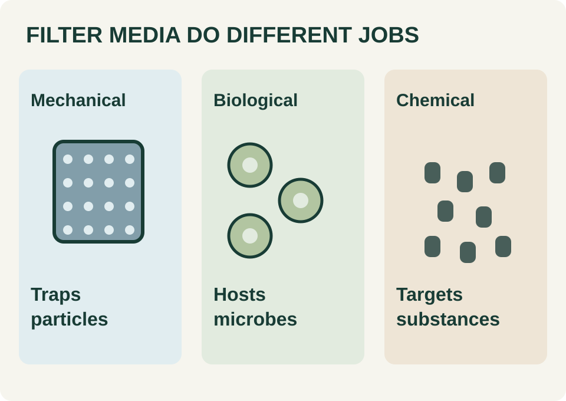

Clean a filter to remove accumulated waste, not to make every surface look new. Biological filtration depends on bacteria living on filter surfaces. Their work changes ammonia into nitrite and then nitrate; mechanical filtration instead catches particles. One piece of sponge can do both jobs, so identify what you are handling before deciding to discard it.3
- Mechanical pads and floss: remove trapped debris; replace material that is worn out or cannot be cleaned adequately.
- Biological media: gently rinse away accumulated debris in removed aquarium water. Routine cleaning is not a reason to replace the whole biological stage.
- Chemical media: replacement or regeneration depends on the particular material and its instructions. Rinsing is not a universal way to renew it.
- Combination cartridges: check whether they also support biological filtration. Avoid replacing every established cartridge together.2
Use a dedicated aquarium bucket. Lightly rinse established media in removed tank water, rather than untreated chlorinated tap water, and avoid soap or detergent. The aim is to dislodge the obstruction without aggressively stripping the surfaces supporting beneficial bacteria.1
Unplug the filter before opening it, then follow its manual for access and reassembly. Return the media and restart once the aquarium is refilled appropriately. Check basket order against the manual.2
Record the date, the part cleaned, any part replaced, and whether the outlet flow returned to its usual appearance. A note saying “intake sponge rinsed” is more useful next time than “filter done.” Photograph unfamiliar basket arrangements before taking them apart.
Do not turn that record into one cleaning deadline for every filter. Media roles and equipment differ. Nor does filter servicing replace partial water changes. Keep those as separate entries in your maintenance record so neither task disappears behind the other.3
See it in 3D: Inside a Bio-Wheel Filter, a 3D look at a filter’s biological stage.
Sources & editorial notes 3 references
- RSPCA Australia — How should I care for my tropical fish? (opens a new tab)Updated May 1, 2024
- Seachem Knowledge Base — Guide: Caring for the Freshwater Tank, filter-maintenance section (opens a new tab)undated
- Aqueon — Aquarium filtration basics (opens a new tab)undated
Background: Evergreen guide · Published November 1, 2026.
Original editorial writing for an independent design preview. Research and reporting dates are preserved above; earlier work is not presented as a new announcement. Product statements are attributed to their manufacturers. No store inventory or endorsement is implied.